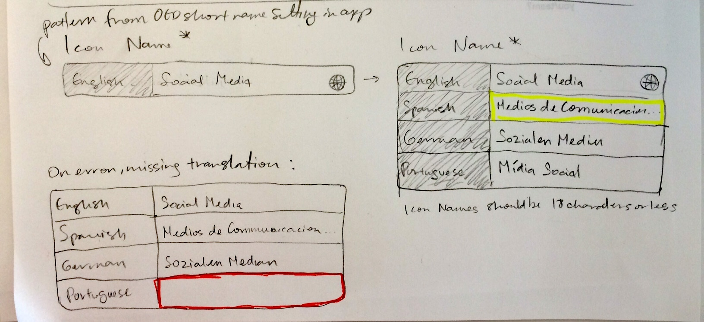
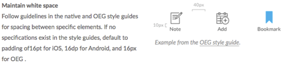

CrowdCompass App Localization, 2016
Skills
- Customer interviews
- Design studios
- Usability testing
- Web UX design
- Web UI design
Tools
- Device simulators
- Sketch
- InVision
Artifacts
- Sketches
- Usability test results
- Style guide
- Mockups
- Interactive prototypes
Problem
In order to expand our international business and reach feature parity with our competitors, the product team initiated a two-phased localization effort for the CrowdCompass app. The first phase was simple translation of hardcoded strings based on the user’s device language/locale settings. The second phase involves a wider selection of languages and the ability for event planners to create a true multilingual app.

Solution
In phase one, I used Genymotion and an iOS simulator to run app builds created with long pieces of text (either German or string names) in place of hardcoded strings to thoroughly evaluate where our current UI breaks. I used what I learned and screenshots from the simulators to create a style guide that our development team continues to use to solve interface bugs related to localization.

For phase two, I started by creating an audit of areas where our CMS would need to change to accommodate multiple translations from our customers and outlining some potential solutions based on existing design patterns. Next, I evaluated other tools our customers would be using that support multiple languages and scheduled customer interviews to learn more about their workflows, business goals, and how their current localization tools work for them and what workarounds they currently employ.
Then I applied what I learned to create several iterations of pixel-level mockups and collaborated with our lead designer to refine the UI. I used these mockups to create an interactive InVision prototype that I used for usability testing with our customers.
Result
While this project was still ongoing when I left the company, the design studio conducted with the sprint team increased team engagement and surfaced ideas for a future phase of localization. Bringing in customers for research has also increased anticipation of this feature and is expected to increase sales in our international markets.